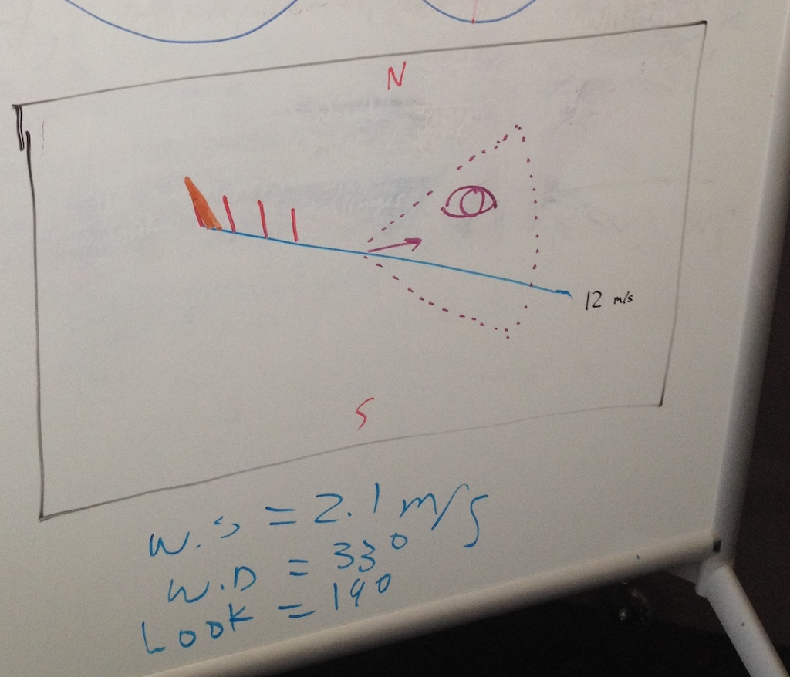
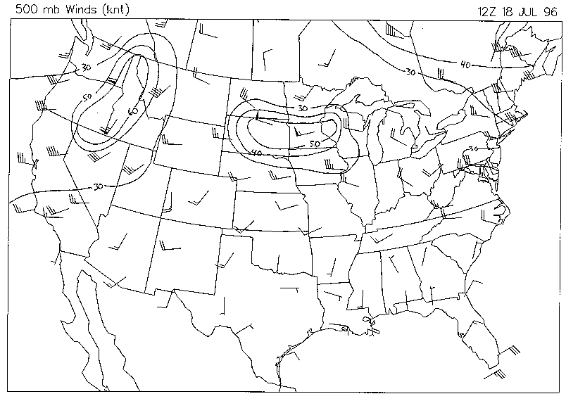
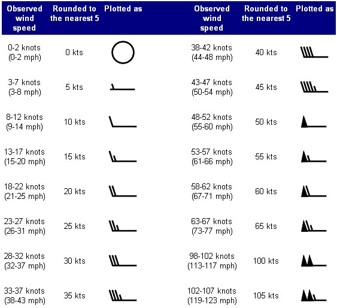

Glass: An Opportunity
- visualization of wind
- augmented reality
- useful for
- military
- firefighting
- wind farm optimization
- needed help
Help Wanted
Look around and see the wind with Glass.
- what to build
- how to build
- user interface
- loading data
Brainstorming
demo / mvp
- wind speed ¹
- wind direction ¹
- direction of observation
- canned data ok
This is a whiteboard.

The outcome of our brainstorming session.
The Little Big Idea

Steve Jobs: Picasso had a saying –
"good artists copy; great artists steal" …
Wind Barbs

Magnitude and direction
wind speed, wind direction, direction of observation
What's with ¹?
1 – wind being looked at ²
- Given:
- current GPS coordinate
- heading (direction of observation)
- azimuth (angle of observation)
- When:
- limit observation height to an imaginary ceiling
- Then:
- determine the GPS coordinate of observation
2 – preposition